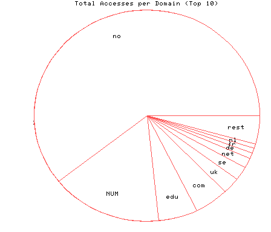
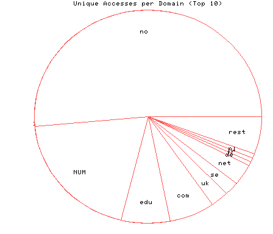

HTTP Server Domain Statistics
Covers: 03/04/96 to 03/11/96 (8 days).
All dates are in local time.
1 level, sorted by number of requests, 57 unique domains.
140949 : 4929 : 03/11/96 : Norway (.no) 37235 : 1887 : 03/11/96 : (numerical domains) 12915 : 663 : 03/11/96 : US Educational (.edu) 11443 : 619 : 03/11/96 : US Commercial (.com) 5913 : 247 : 03/11/96 : United Kingdom (.uk) 4802 : 194 : 03/11/96 : Sweden (.se) 3682 : 312 : 03/11/96 : Network (.net) 1895 : 54 : 03/10/96 : Germany (.de) 1881 : 63 : 03/10/96 : France (.fr) 1626 : 60 : 03/10/96 : Netherlands (.nl) 1195 : 79 : 03/10/96 : Denmark (.dk) 1154 : 58 : 03/11/96 : Canada (.ca) 1133 : 32 : 03/10/96 : Switzerland (.ch) 656 : 17 : 03/10/96 : Iceland (.is) 632 : 27 : 03/11/96 : Italy (.it) 618 : 33 : 03/10/96 : Non-Profit (.org) 492 : 21 : 03/11/96 : Japan (.jp) 486 : 39 : 03/11/96 : Australia (.au) 315 : 20 : 03/10/96 : Finland (.fi) 182 : 12 : 03/10/96 : Austria (.at) 174 : 12 : 03/09/96 : Israel (.il) 166 : 8 : 03/10/96 : US Government (.gov) 150 : 10 : 03/10/96 : Spain (.es) 146 : 9 : 03/10/96 : Belgium (.be) 122 : 9 : 03/10/96 : South Africa (.za) 101 : 2 : 03/11/96 : Costa Rica (.cr) 88 : 9 : 03/10/96 : Singapore (.sg) 82 : 4 : 03/08/96 : Luxembourg (.lu) 75 : 5 : 03/10/96 : US Military (.mil) 71 : 4 : 03/08/96 : Ireland (.ie) 67 : 4 : 03/11/96 : Malaysia (.my) 64 : 8 : 03/09/96 : United States (.us) 61 : 1 : 03/09/96 : Hong Kong (.hk) 55 : 3 : 03/09/96 : Brazil (.br) 51 : 3 : 03/10/96 : Estonia (.ee) 51 : 1 : 03/08/96 : Turkey (.tr) 47 : 2 : 03/06/96 : Hungary (.hu) 43 : 2 : 03/10/96 : International (.int) 40 : 1 : 03/10/96 : Kuwait (.kw) 38 : 4 : 03/11/96 : Portugal (.pt) 38 : 2 : 03/05/96 : Bermuda (.bm) 32 : 6 : 03/09/96 : Indonesia (.id) 31 : 3 : 03/10/96 : Nicaragua (.ni) 27 : 2 : 03/10/96 : South Korea (.kr) 18 : 1 : 03/10/96 : Thailand (.th) 13 : 1 : 03/07/96 : Bolivia (.bo) 11 : 1 : 03/06/96 : Latvia (.lv) 10 : 3 : 03/10/96 : Mexico (.mx) 9 : 2 : 03/07/96 : Slovenia (.si) 9 : 1 : 03/06/96 : Chile (.cl) 9 : 1 : 03/05/96 : Greenland (.gl) 7 : 1 : 03/10/96 : China (.cn) 3 : 1 : 03/10/96 : Faroe Islands (.fo) 3 : 1 : 03/08/96 : Bahrain (.bh) 2 : 1 : 03/09/96 : Lithuania (.lt) 2 : 1 : 03/04/96 : Soviet Union (.su) 1 : 1 : 03/06/96 : Czech Republic (.cz)

Statistics generated at Mon Mar 11 02:56:29 MET 1996, (C) Schibsted Nett AS, 1995.